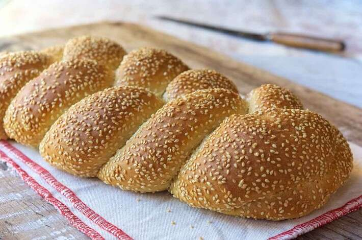

Scali bread is a staple of Boston-area supermarkets and bakeries. The bread is shiny, mahogany-brown in color, braided, and coated with lots of sesame seeds which give it a nutty flavor and a nice visual appearance. In order to make it, a simple combination of flour, yeast, and water is left to transform into a bubbly dough overnight, and the next day it's combined with water, milk, olive oil, salt, and flour.
Meal prep time : 2 hours 25 minutes
Servings : 2